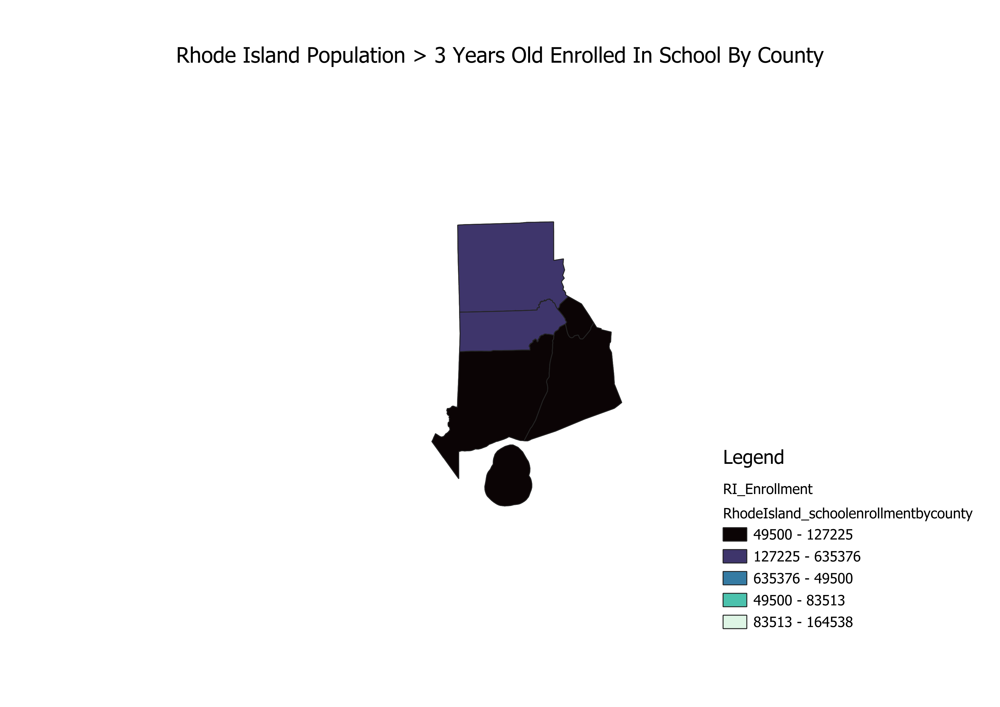

Homework 6: Census data choropleth
Nicholas Pell
This is a map of the population of people within each County that is over 3 years old and enrolled in school. The darker the county the fewer people enrolled in school in that county and vice versa for the lighter counties. From the data we can see that the more Northern counties have more people enrolled in education than the more Southern counties.
 3 Years Old Enrolled in School By County" width='500px'>
Data used for this project
CSV dataset
Link to shapefile